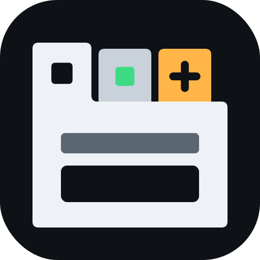

Link an LLM to build your own tabs and features by chatting, or open a plain editor.
The text editor is the IDE tab without an LLM: files, syntax colors, Run.
Talking to . Ask for a tab (say "make a tab that…") and open it from the reply, or use + → Add new item.
The duck is out on your desktop. Drag him anywhere; double-click him to put him back.